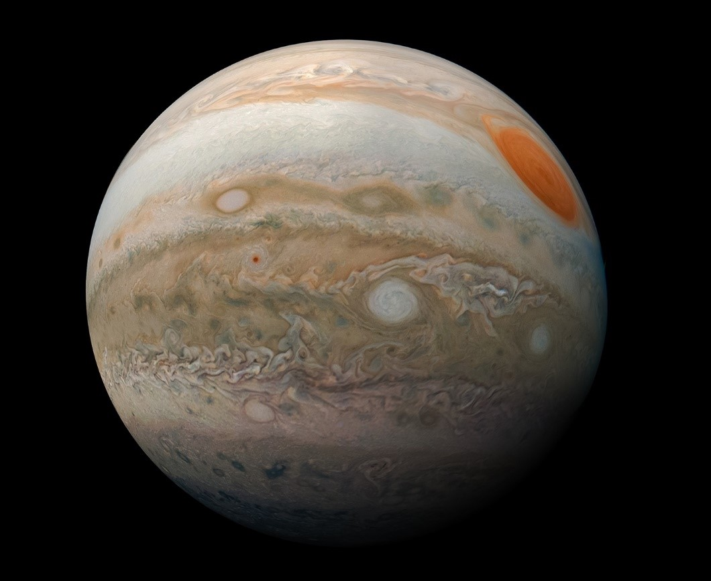
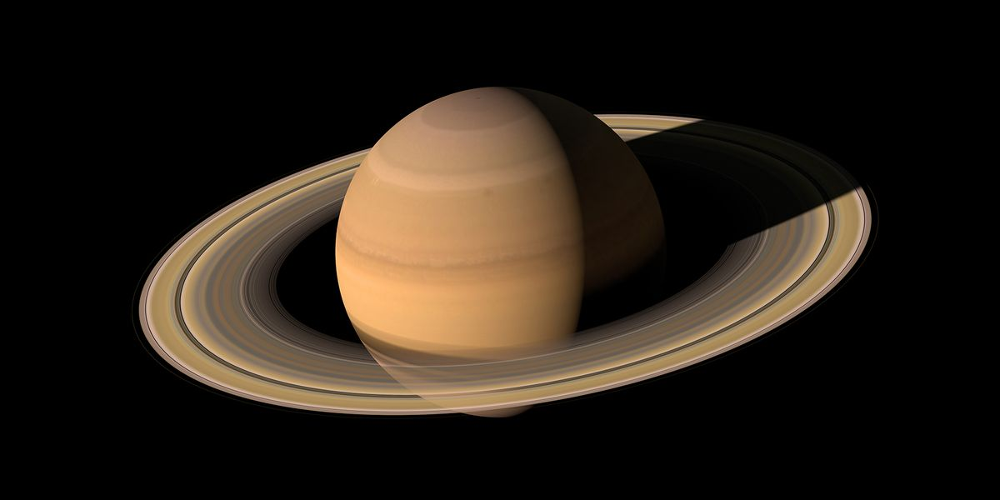
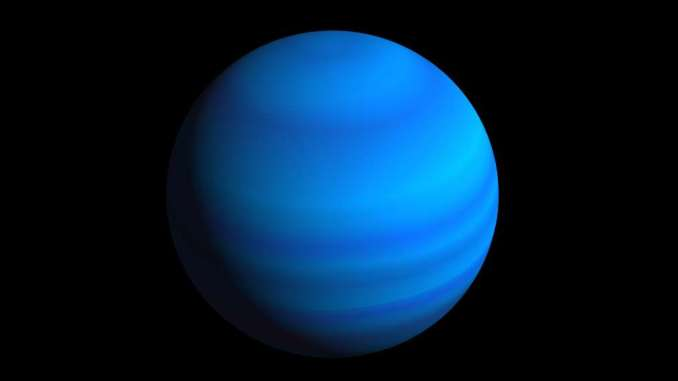

The Solar System
Our solar system is centered on the Sun, a star. There are 8 planets that revolve around the Sun, bound to it by gravity. To get an idea about the relative size and distances of the objects in our solar system, this site does an amazing job to help you visualize it. A common mnemonic device to help you remember the order of the planets relative to the Sun is the sentence:
My Very Educated Mother Just Served Us Nachos!
1. Mercury
2. Venus
3. Earth
4. Mars
5. Jupiter
6. Saturn
7. Uranus
8. Neptune
1. Mercury
Mercury does not have any moons or rings. It is the smallest planet and is the closest planet to the Sun. Mercury has the largest orbital eccentricity of all our planets because its distance from the Sun ranges from 46 million KM to 70 million KM.

2. Venus
Even though Venus is farther from the Sun than Mercury, it is the hottest planet in our solar system. Venus is almost exactly the same size as Earth. Venus is the second brightest object in our sky, only the Moon is brighter. It can even, occasionally, during daytime be seen on a clear day! The atmospheric pressure on Venus is almost 100 times greater than that of Earth. Venus was the first planet to have its motion plotted across the sky.

3. Earth
The name "Earth" is at least 1000 years old, all the planets except Earth were named after Greek and Roman gods and goddesses. Earth is the only planet with liquid water on the surface. If the Sun was as tall as a typical front door, then, relative to the Sun, Earth would be the size of a nickel. Earth's atmosphere protects it from incoming meteorites because most of them break apart before they can strike the surface. The first Earth Day started in 1970 on April 22 with hopes of increasing awareness about the importance of protecting our planet.

4. Mars
Also known as the Red Planet, Mars is smaller than Earth. One day on Mars is almost exactly the same length as a day on Earth. The atmosphere on Mars is very thin, meaning it can't trap the Sun's heat very well, so it is very cold. The gravity is very weak, on Mars you can jump 3X higher than you can on Earth. Mars is tilted at a 25 degree angle so it has seasons similar to Earth when different parts of the planet are closer to the Sun.

5. Jupiter
Jupiter is over 300 times more massive than Earth. It is not only the largest planet but it is 2.5 times more massive than ALL the other planets in our solar system combined. It is also the fastest spinning planet in our solar system. It only takes 10 hours to complete one rotation on its axis. Jupiter has at least 67 moons (named and confirmed natural satellites). It has four major moons called Io, Europa, Ganymede and Calisto. It is the third brightest object in our sky.

6. Saturn
Saturn is the farthest planet from Earth that can be seen without a telescope. Saturn orbits the Sun every 29.4 Earth years. It has the most rings of any planet in our solar system. The rings are made up of ice and carbonaceous dust. They stretch out 120000 km from the planet but are surprisingly thin, only 20 meters thick. Saturn has over 150 moons and moonlets, the largest 2 are called Titan and Rhea.

7. Uranus
Uranus is the coldest planet in our solar system. It was the first planet discovered in the modern age. It was first recorded in 1690 but it wasn't till 1781 that astronomers realized it was a planet. It is named after the Greek god of the sky, Ouranos. Uranus is tilted must more than the other planets, the other planets are like spinning tops but Uranus is more like a rolling ball as it orbits the Sun.

8. Neptune
The farthest planet from the Sun is Neptune. It was discovered in 1846. When the dwarf planet of Pluto was discovered in 1930, it was thought that Pluto was the farthest planet from the Sun but Pluto's orbit is very elliptical so there are periods where Pluto is actually close to the Sun than Neptune. Neptune's surface gravity is very similar to Earth. It has the strongest winds in the solar system, reaching up to 2,100 km/hour.